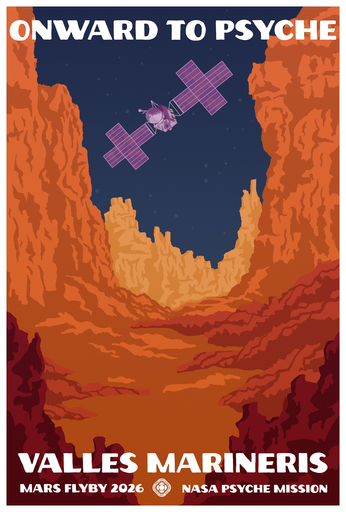
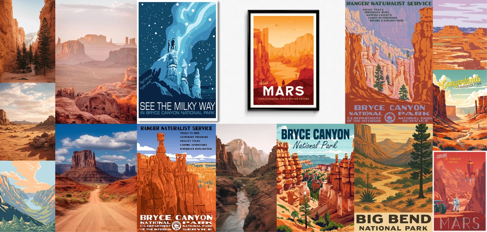
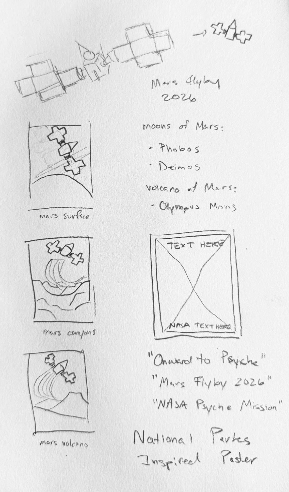
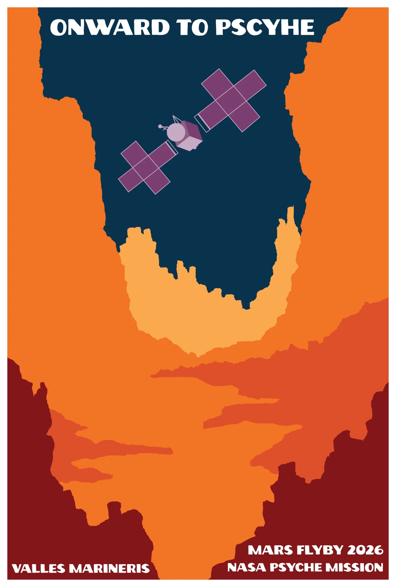
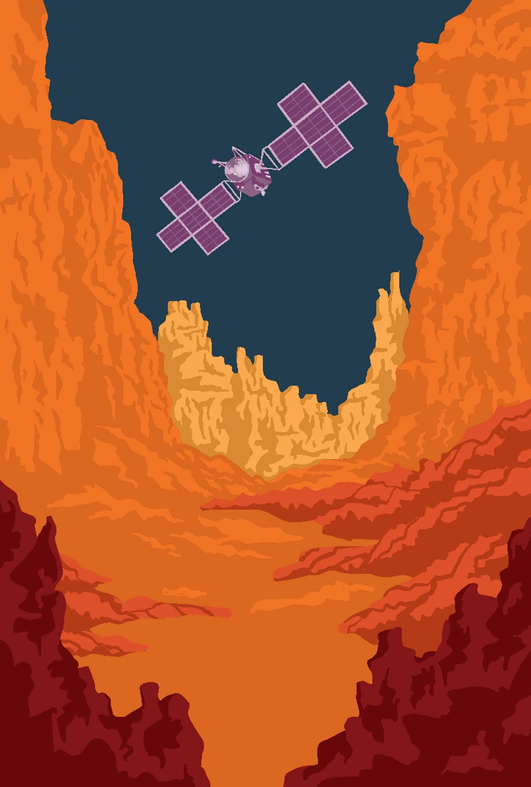

Illustration · Digital · NASA Psyche Inspired
Onward to Psyche
Inspired by the iconic Works Progress Administration (WPA) National Parks posters that circulated throughout the United States during the 1930s and 1940s, this poster aims to celebrate the future of space exploration while acknowledging the visual language of our past.

01
About the work
The original WPA series was designed to make America’s national parks feel accessible, exciting, and worth protecting. By borrowing that artistic heritage, this work places Mars—specifically Valles Marineris—into the lineage of landscapes once reserved for Earth. The canyon system on Mars is visually reminiscent of formations like Bryce Canyon and the Grand Canyon, making it a fitting site for a retro-futurist invitation.
The poster commemorates the NASA Psyche mission and the forecasted Mars flyby in May 2026. The Psyche spacecraft appears at the center of the composition: crisp, geometric, and unmistakably technological, contrasting with the soft, stratified shapes of the canyon below. Although the canyon contains the brightest colors in the piece, the spacecraft remains the visual focal point, flying overhead.
Space is not distant or cold, but familiar and reachable—another place we might someday explore more freely.
02
Moodboard

To further echo the WPA aesthetic, the artwork uses grain, flattened shapes, and strong silhouette forms rather than photographic or painterly realism. These posters were historically screen-printed and relied on bold separations of color to tell a story quickly and clearly. Here, those qualities are recreated digitally through a vector workflow, allowing every line and shape to remain clean at any size.
03
Sketches

Thumbnails: surface, canyons, volcano
04
In progress

Flat shapes and type 
Texture, before type
Contrast plays a major thematic and visual role: deep blues against vivid oranges, yellow highlights against purple shadows, bright light against cavernous darkness. These choices are aesthetic, but symbolic as well—representing the balance between the unknown and the familiar, isolation and hope, exploration and home. The canyon walls rise like cathedral architecture, guiding the viewer’s eye upward toward Psyche, suggesting aspiration and human curiosity.
05
Final
The typography uses John Muir Sans, a modern recreation of the letterforms used in the original WPA series, which helps reinforce the connection between historical design and future subject matter.
The poster was created in Figma as a vector illustration on a 27 × 40 inch (8100 × 12000 px) canvas. This format allows the artwork to scale cleanly for multiple uses, from large-format printing to smaller applications such as stickers or educational materials. In this way, the design honors the original purpose of WPA posters: to communicate widely, clearly, and accessibly.
By inviting the viewer “Onward to Psyche,” it blends nostalgia with possibility.